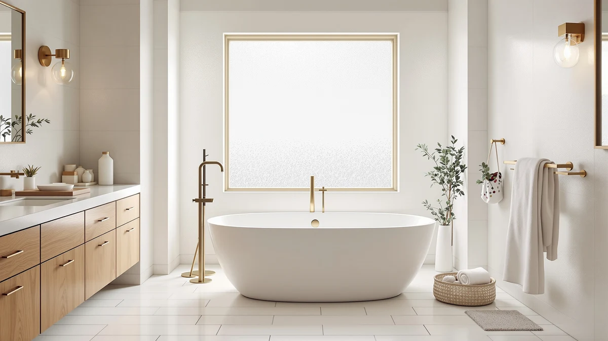

Best Freestanding Tub Brands of 2026: WOODBRIDGE vs FerdY vs Signature Hardware vs ANZZI
Prices and picks verified as of September 2026. Independent, reader-supported reviews.


Things to Know Before You Buy
- Acrylic thickness, measured in gauge or ounces per square foot rather than vague marketing language, determines how well a tub resists flexing and cracking over time.
- Freestanding tubs need floor reinforcement in many older homes; a filled 60-inch tub can weigh 400 to 500 pounds with two adults inside.
- Drain and overflow kits are sold separately by some brands, so confirm what is actually included before you compare prices.
- Warranty length varies from one year on budget imports to a decade or more from established manufacturers like Signature Hardware.
- Freight shipping damage is common with freestanding tubs, and brands that reinforce corner packaging report fewer returns.
Finding the best freestanding tub brands starts with knowing which manufacturers actually stand behind their acrylic, their overflow kits, and their drain assemblies once the tub is bolted to your bathroom floor. Dozens of import brands sell nearly identical ovals and rectangles, yet the wall thickness, gel coat quality, and customer support behind those tubs vary enormously. Shoppers who choose on price alone often discover the difference only after a support ticket goes unanswered.
WOODBRIDGE, FerdY, Signature Hardware, and ANZZI dominate the freestanding tub category on Amazon for different reasons. WOODBRIDGE built its reputation on consistent acrylic thickness and a drain kit that fits without modification. FerdY leans into deeper soaking profiles for buyers who want a genuine bath rather than a rinse. Signature Hardware sells a smaller lineup at a higher price point, backed by a warranty and support team that mass-market importers rarely match, while ANZZI competes hardest on entry pricing without cutting corners on the basin itself.
This guide breaks down what separates a durable freestanding tub brand from one that only looks good in photos, how the major manufacturers differ in construction and support, and which mistakes cost buyers the most money during installation. You will also find our current top picks below, chosen for fit, finish, and value across three different budgets.
What You Need to Know
Shopping for the best freestanding tub brands means looking past the marketing photos and into the specifications that actually predict how a tub performs over ten years. Acrylic freestanding tubs, the material used by WOODBRIDGE, FerdY, ANZZI, and most of the brands in this guide, are built by heating and vacuum-forming a sheet of acrylic over a mold, then backing it with fiberglass for rigidity. The thickness of that acrylic sheet, typically listed in the product specs as gauge or weight, is the single biggest factor separating a tub that holds its shape for a decade from one that flexes and stains within a year.
Brand reputation matters because freestanding tubs are heavy, awkward to return, and prone to freight damage. A manufacturer that answers support emails and ships replacement parts saves you from a $700 to $2,000 purchase becoming a total loss over a cracked drain flange. Signature Hardware and WOODBRIDGE have built customer service infrastructure around this reality, while newer import brands compete mostly on price and rely on Amazon's return policy as their de facto warranty.
Weight capacity and floor support deserve equal attention. A 60-inch acrylic tub weighs roughly 90 to 120 pounds empty, but filled with water and two occupants it can exceed 500 pounds concentrated on a small footprint. Check your subfloor before ordering, especially in second-floor bathrooms or older homes, and confirm the brand's stated capacity against your actual household needs rather than the marketing maximum.
Types and Categories
Not every freestanding tub brand builds the same kind of tub, and understanding the categories helps you compare apples to apples. Acrylic freestanding tubs, the most common type among the best freestanding tub brands sold online, offer a good balance of weight, warmth retention, and price, typically ranging from $500 to $1,500. Brands like WOODBRIDGE, FerdY, ANZZI, and VEVOR concentrate almost entirely in this category.
Cast iron and stone resin tubs sit at the premium end, often $2,000 and up, and Signature Hardware carries several stone resin models alongside its acrylic lineup. These materials hold heat longer and resist scratching better than acrylic, but the added weight, sometimes 300 pounds or more empty, means floor reinforcement is not optional in most homes.
Within acrylic tubs, shape matters as much as brand. Oval and rounded designs, common from FerdY and Mokleba, tend to fit better in smaller bathrooms and soften a boxy room. Rectangular and Japanese-style deep soakers, offered by brands like ANZZI and Garvee, prioritize water depth over floor footprint for buyers who'd rather soak than rinse.
Slipper and double-slipper tubs, where one or both ends rise higher for back support, appear across several brands but are less common than standard ovals. If ergonomic back support matters to you, confirm slipper styling before you buy, since photos alone can make a standard oval look more contoured than it actually is.
How to Choose
Choosing among the best freestanding tub brands comes down to matching construction quality, price, and support to your specific bathroom and budget, not chasing the brand with the most reviews. Start with your bathroom's dimensions and existing plumbing rough-in. Freestanding tubs need floor-mounted drains in most installations, and moving that drain line can add hundreds of dollars to a renovation budget before you have spent a cent on the tub itself.
Next, compare acrylic thickness and reinforcement across brands rather than relying on star ratings alone, since ratings often reflect delivery experience as much as product quality. WOODBRIDGE and FerdY publish acrylic thickness in their specifications, which makes direct comparison possible. When a listing omits this detail, treat it as a signal to look elsewhere or confirm with the seller before ordering.
Factor in what is actually included. Some brands bundle the drain and overflow kit, while others sell the tub alone and expect you to source hardware separately. Signature Hardware and WOODBRIDGE typically include a complete kit, which simplifies installation and avoids a mismatched drain finish.
Weigh price against warranty length rather than sticker price alone. A $550 ANZZI tub with a one-year warranty and a $1,000 Signature Hardware tub with longer coverage and a dedicated support line can end up costing similarly once you account for the risk of a shipping-damaged replacement.
Finally, read verified buyer photos and owner reviews, not just the star average. Reviewers consistently note issues like drain kit fit, shipping damage, and gel coat texture that never appear in manufacturer listings. A brand with consistent five-star reviews on fit and finish across multiple tub sizes is a stronger signal than a single flagship model with glowing reviews.
Common Mistakes to Avoid
The most expensive mistake buyers make is ordering a freestanding tub before confirming their subfloor can support the weight once filled. A 60-inch tub with two occupants can concentrate 400 to 500 pounds on a few square feet of flooring, and homes with older joist spacing are not always built for that load. Have a contractor check before you order, not after delivery.
A close second is assuming every brand includes a drain and overflow kit. Buyers frequently discover after installation day that their tub shipped without one, which delays the job while a compatible kit ships separately. Check the listing's included-items section carefully, and when in doubt, contact the seller before ordering.
Many buyers also skip measuring the doorway and stairway path to the bathroom. Freestanding tubs, even smaller 55-inch models, are bulky and rigid, and a tub that will not clear a hallway turn becomes a costly return.
Choosing based on price per inch instead of actual capacity is another common error. A wider, shallower tub and a narrower, deeper tub can list the same price despite very different bathing experiences. Compare gallon capacity, not just length, before deciding.
Finally, ignoring the return policy on freight-shipped items leads to disputes when damage occurs in transit. Photograph the packaging immediately upon delivery, before you even open the box, to protect your claim.
Care and Maintenance
Acrylic freestanding tubs from every brand in this guide share the same basic maintenance needs, even though warranty terms differ. Clean the surface with a non-abrasive cleaner and a soft cloth; anything gritty or steel wool will dull the gel coat and create micro-scratches that trap soap residue over time. Avoid bleach-based cleaners on colored or textured finishes, since repeated exposure can fade the surface faster than the manufacturer's stated lifespan.
Check the drain seal and overflow gasket every few months for slow leaks, especially in the first year after installation. A loose connection here is the single most common warranty claim across WOODBRIDGE, FerdY, and ANZZI listings, and most brands cover it if you catch it early and document the issue with photos.
Avoid setting hot styling tools, candles, or anything with a sharp edge directly on the rim. Acrylic softens slightly under sustained heat, and a set-down candle or flat iron can leave a permanent indentation that no cleaning product will fix.
For stone resin or cast iron tubs from brands like Signature Hardware, reseal grout lines around the base annually if the tub sits against a tiled wall, and dry the underside access panel after deep cleaning to prevent trapped moisture. Routine care like this is why some tubs still look new after five years while others need replacing.
Our Top Picks
Based on acrylic quality, included hardware, and verified owner feedback, these three freestanding tubs are the strongest options across entry, mid-range, and premium budgets among the best freestanding tub brands we compared.

Editor’s Pick
WOODBRIDGE 59" Acrylic Freestanding Bathtub
A well-balanced 59-inch acrylic tub with a complete drain kit and consistent wall thickness, priced fairly for the quality WOODBRIDGE delivers.
$719.00
Check Price on Amazon
Best Value
FerdY Tahiti 55" Acrylic Freestanding
FerdY's Tahiti offers a deeper soak profile than most competitors at this price, though it does not suit the smallest bathroom footprints.
$999.99
Check Price on Amazon
Premium Choice
Signature Hardware 312541 Lena 72"
A 72-inch stone resin tub with the strongest warranty and support in this guide, built for buyers who want to spend once and be done.
$2,599.00
Check Price on AmazonFrequently Asked Questions
What is the best freestanding tub brand for most people?
WOODBRIDGE and FerdY consistently rank among the best freestanding tub brands for most buyers because they balance acrylic quality, included hardware, and price without the premium markup of brands like Signature Hardware. For a majority of standard bathroom renovations, either brand delivers a tub that holds up for a decade with basic care.
How much does a freestanding tub cost?
Acrylic freestanding tubs from brands like ANZZI and WOODBRIDGE typically range from $500 to $1,000, while stone resin and larger models from Signature Hardware can run $2,000 to $3,000 or more. Installation, including new plumbing rough-in if needed, often costs as much as or more than the tub itself.
Do freestanding tubs need floor reinforcement?
Many homes, especially those built before modern building codes or with second-floor bathrooms, need floor reinforcement to safely support a filled freestanding tub. A 60-inch tub with two occupants can weigh 400 to 500 pounds concentrated on a small footprint, so a contractor should verify subfloor capacity before installation.
What is the difference between acrylic and stone resin freestanding tubs?
Acrylic tubs, offered by brands like WOODBRIDGE, FerdY, and ANZZI, are lighter, warmer to the touch, and less expensive, typically $500 to $1,500. Stone resin tubs, more common from brands like Signature Hardware, retain heat longer and resist scratching better, but weigh significantly more and cost $2,000 or above.
Do freestanding tubs come with the drain and overflow kit included?
It depends on the brand. WOODBRIDGE and Signature Hardware typically include a complete drain and overflow kit with their tubs, while some budget import brands sell the tub alone and expect buyers to source hardware separately. Always check the listing's included-items section before ordering.
Verdict
After comparing acrylic thickness, included hardware, warranty coverage, and verified owner feedback across the category, WOODBRIDGE stands out among the best freestanding tub brands for buyers who want reliable construction without paying a premium. Its 59-inch acrylic tub ships with a complete drain kit, holds consistent wall thickness that resists flexing, and costs less than comparable stone resin options from brands like Signature Hardware.
That said, no single brand fits every bathroom. FerdY's deeper soaking profile suits buyers who bathe more than they shower, and Signature Hardware's stronger warranty and support infrastructure justify the higher price for anyone willing to pay more upfront to avoid dealing with the tub again. ANZZI remains the strongest entry-level option if budget is the deciding factor and you are comfortable sourcing your own drain kit.
Whichever brand you choose, confirm your subfloor can handle the filled weight, verify what hardware is actually included, and photograph the shipping packaging the moment it arrives. Do that, and you sidestep most of what buyers report going wrong after installation.